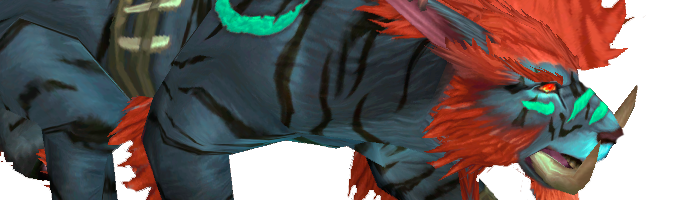

Is there life after Deathwing
Now that Deathwing is dead and it's time for relaxed farm time, what are your plans for today?
Kyylol: Think I´ll play some more wow, and try to finish my studies before summer so I'll finally graduate.
Tauno: I'm gonna take it easy, I won't be playing WoW outside of raids that much. Now that I got time, I will play mostly League Of Legends.
Iiris: Getting back to school and going to gym regularly. Eating healthy food instead of those disgusting pizzas and maybe I have some time for Dota and anime once more.
Fragi: In general I just play games, watch series/movies and occasionally study.
Xodan: Chilling (at -30 c).
Tuutti: At the moment I have school 1 hour per week so I try to work as much as possible. The rest of the time goes to watching movies and series etc.
Ussos: At the moment I'm focusing on school and playing Dota 2.
How would you rank t13 compared to previous tiers?
Kyylol: Encounter wise it was decent. Obviously all the stuff happening with the race itself left the tier tasking kind of bad overall.
Tauno: It's definitely in my top3 with ICC and T11.
Iiris: It is kind of hard for me to compare it objectively to the other tiers because of all the unpleasant stuff we faced during progress but I would say it was definitely worse than t11 and t12. Recycled models and areas + disappointing end boss didn't make it feel like a new epic instance. Also all the things that the previous tier's caster legendary affected to DS was kind of unpleasing (me rolling a mage, hunters being bad etc.).
Fragi: As many have said, this tier wasn't the best for the progress raiders with the bans and bad encounter design for the last 2 bosses, so definitely a worse one than the last 2 before it for example ( and this has nothing to do with our rank ;)
Xodan: Complexity and mechanics wise pretty similar to the rest of the tiers in this expansion. Tuning was a little off. Overall maybe the worst tier in this expansion, but I think the reason was more about class inbalance than the fights itself (though Spine was just retarded).
Tuutti: It's the second worst tier right above ToCG, hands down.
Ussos: I've only raided tier 12 and tier 13 in Cataclysm (as I was in army during tier 11) but of those t13 was a lot worse.
"Son I'm disappoint."
Which was the most fun fight in Dragon Soul, and which the biggest disappointment and why?
Kyylol: Most fun encounter, well I can´t really pick THE most fun one but I think all the encounters up to Ultraxion were pretty nice and I actually did enjoying playing em.
As for disappointments it has to be spine and madness. They didn’t really make Deathwing to feel as one of the most powerful beings in Azeroth. Spine was purely about stacking the raid comp and Madness was just way too easy to be an end boss of the whole expansion.
Tauno: If I had to pick the most fun fight it would be Heroic Warmaster Blackhorn. The biggest disappointment was Heroic Spine of Deathwing and Madness of Deathwing. Spine required a lot more gear and was harder compared to Madness. As Deathwing had so big part of WoW Lore and was killed so easily.
Iiris: I think Madness was the most fun but at the same time probably the most disappointing fight if that makes any sense. Playing as a Fire mage here wasn't boring, big numbers and hasted casts make the life of a Fire mage sheer revelry, also the fight had plenty of things you needed to watch out for so it wasn't too simple like Ultraxion for example.
I wanted Deathwing to be more like BWL Nefarian where you could actually fight the dragon himself, tank him around like a traditional dragon boss so you would see his massiveness in full glory instead of just fighting his corpse in a whirlpool and a bunch of tentacles. He was also probably too easy to be the last boss of the expansion though some may argue that Spine+Madness combined were the last boss but it just doesn't feel like it.
Fragi: Easier to start with the biggest disappointment which was Madness for being too easy, that was a big letdown. As a rogue during progress I would have said that Warmaster Blackhorn was the most fun. With protection warrior now it's Spine I suppose.
Xodan: Most fun is probably Ultraxion. The Patchwerkesque dps races are fun to play. Special mention goes to Spine of Deathwing, which I hate and love at the same time. I love that I can use cat and bear at the same fight effectively, but I hate the retarded mechanics of it. Biggest disappointment was Madness of Deathwing. The fight is just a big snooze fest for the first 8 minutes or so, because of the massive buffs. An add fight at its worst.
Tuutti: I didn't really have a favourite encounter, but if I had to pick one then it would be Yor'sahj the Unsleeping. Spine was the biggest disappointment for me mostly because of the retarded raid comp requirement.
Ussos: "What was the most fun fight in DS", a tough question. Honestly none of them really stood out, if I really had to pick one I'd do it by /roll 1-8. The biggest disappointment is an easy one though, and that was obviously Deathwing.
How did your class perform in Dragon Soul and would you have changed anything?
Kyylol: I think priest did great, both healer and dps roles had their spot and it was actually not only due to utility but we were competitive on meters as well.
Tauno: Warlock might be one of the weakest classes in Dragon Soul. The class was only good at multidot and aoe fights such as Gunship, Zon'ozz and Yor'sjah.
Iiris: Retribution paladin would have been ok in the progress mainly because hunters didn't get the AP buff that melee got and Fire mages were OP. Oo you probably would have wanted to have a ret instead of Arcane mage or BM hunter, but I had to play my Fire mage instead because ret was so subpar in Firelands that I had to gear one before DS.
Holy and prot performed well without a doubt and I guess I don't have to tell you if mages were good or not? =)
Fragi: Well I did play a rogue during progress and we were near the top of the food chain. As for the changes, everything I ever wanted was to backstab Ultraxion :(
As for warriors, fury or arms weren't as good in progress as they are now during the farm for purplz, topping the meters. Prot warrior was certainly a bit inferior to other tanks on some encounters. Tough on Spine - which was basically the only one that mattered - warriors we were good.
Xodan: Overall feral cat did perform quite poorly. With raid full of legendary casters, rogues (and warriors) there isn’t really a spot for a cat. We just can’t deliver enough damage. In addition, not being able to shred at Ultraxion, was once again a slap in the face. Hopefully the seriously outdated backstab mechanic would be gone at MoP, but it seems unlikely. However cat did shine at Spine of Deathwing, where you could dps the first two platforms and then tank the last platform. Hydridism at its best.
Tuutti: Death knight was one of the worst classes, I skipped most of the Dragon Soul but got in on Spine. It was a pity spot in the raid because they needed my physical damage debuff.
Ussos: Hagara, Warlod Zon'ozz, Yor'sahj and Morchok were good fights for a resto druid. On the rest you didn't really need more than one, so a resto druid could have done a bit better in Dragon Soul overall.

Kitty wasn't STORNG enough. Help me Alamo.
Are you disappointed in placing 4th in the race?
Kyylol: Ofc you have to be disappointed when you aim to be rank 1 and you aren’t. But you can’t win every time and often it's good to lose some to clear your vision and realize that you are only mortal.
Tauno: Actually not, We had 1 week ban on first heroic reset and couldn't progress on 25man heroic during that time.
Iiris: Of course I'm disappointed that we didn't place 1st again but I don't stress it too much cause of all the LFR shenanigans and bans. I think we would have definitely made it 1st again without all that.
Fragi: Of course I am a bit disappointed but at the same time it couldn't really be helped with everything that was going on, so now I'm just looking forward to the race @ pandaland.
Xodan: Naturally, but I don’t think we could have done any better given the circumstances.
Tuutti: Not really no. I was pretty much expecting us not being able to win because of the LFR bans.
Ussos: I don't take games that seriously to be honest. So if something doesn't go as planned I don't really get disappointed.
How is your motivation towards raiding nowadays compared to when you started/before Dragon Soul?
Kyylol: I´d actually say it´s better, it´s pretty much first time in this expansion I feel I’m playing a class that is competitive and I love the feeling .
Tauno: I'm always excited about new content and what it brings with it.
Iiris: I've always been raiding because I wanted to be part of the guild, make it feel like it matters that I show up on raid and do my part as a member. That's why I've had 99-100% attendance whole my life, because my guild needs me. Of course there are times when you would like to do something else than raid but you just have to show up cause you are part of the guild. So I would say my motivation hasn't changed much, farm has always been boring to some extent and we had this little slump recently so maybe I'm bit under the weather right now but I'm pretty confident that we will be back in Mists of Pandaria.
Fragi: People always get pumped up before the progress so obviously the motivation is at its peak there, but personally I don't really lose motivation at any point during the farm.
Xodan: I’d say it has stayed mostly the same. Love (progression) raiding in WoW, the rest is meh.
Tuutti: It hasn't really changed much. I log on during the raids and the rest of the time do something else, just like before.
Ussos: My motivation towards raiding went down a little during Dragon Soul because in my opinion the whole instance just felt so much more boring compared to Firelands. But no worries, I there is still motivation left in me.
If there was a 9th boss in Dragon Soul after Deathwing, how would he/she be?
Kyylol: Was kind of hoping next old god to pop up in this expansion so I think my pick would be that.
Tauno: I can't think of anything.
Iiris: The king of tentacles.
Fragi: I don't know about a 9th boss, I would have rather just change the madness encounter a bit. Some kind of another set of platforms should have appeared hovering above the Maelstrom ( like 3 or so ) and we would have actually fought Deathwing himself with a bit of Heigan dancing as he hits 1 of the platforms down etc. The torso and the head part of Deathwing actually look pretty awesome so it was kind of a waste to just fight his arms and what not.
Tuutti: I bet it would have been another "recycled" boss because almost the whole instance was old stuff model wise.
Ussos: Sorry, can't really imagine anything as a 9th boss. My imagination is on a break!
The King of Tentacles
Do you think Paragon will have a good shot at world firsts at Mists of Pandaria?
Kyylol: Yea we will have the throne back, for sure. T13 was only a minor setback.
Tauno: We'll see about that then. New players come in and old ones might quit. Roster might change a lot before MoP.
Iiris: Like I said earlier I think we will be back at the top in Mists of Pandaria. We just need to put all this what happened in Dragon Soul aside and do our best when MoP hits live. That's what we have always done and it has bore fruit before.
Fragi: We have a fair chance of getting them, the race for the world firsts is always tight so anything can happen though.
Xodan: Yes I do. That the reason most of us play the game.
Tuutti: I hope so.
Ussos: I believe that we have good changes on getting world firsts in Pandas.
When farming gets too boring, what is your number one alternative game at the moment?
Kyylol: Think I´m one of the few people in the guild that actually play the game outside raids and so far I haven’t felt like it´s boring. Obviously I try hot new games but so far none of them has become an actual alternative.
Tauno: League Of Legends, no question of that.
Iiris: Dota 2
Fragi: Well farming doesn't really get boring for me but I mostly play Dota2 and some random singleplayer games atm. Eagerly waiting for Diablo 3 though.
Xodan: Nothing specific, I guess. I bought a ton of games at Steam Xmas sale. Both Bioshocks, DoW2, Shogun 2 etc. I’m sure those keep me entertained for a while.
Tuutti: I don't really play that much anymore, but when I do it's something like TF2 or CSS.
Ussos: Dota 2
Now that Lazei is gone Paragon needs a new officer - who would be your pick and why?
Kyylol: A really hard question :<. I´m not even sure if we need a new officer. But guess Fragi could use officer rank, now that he is one of the main tanks as well.
Tauno: Verdisha, he always knows what he is doing no matter what it is.
Iiris: I can't say who should be our new officer or if we even need one. We are doing most of our decisions together as a guild and if there is something we normal members don't get to decide, I have faith in our present officers that they can get into right conclusion.
Fragi: I guess it would be nice to have 1 healer as a officer to organize that department a bit but don't know if any of them is up for it.
Xodan: Verdisha most likely. Stand-up player and very active in the guild.
Tuutti: It doesn't really concern me.
Ussos: Diivil, if he had enough interest towards to job. I believe he would make a suitable, matter-of-fact like officer.
- xenophics's blog
- Log in to post comments
Comments
can't wait for more usso taunts ! :)
Thu, 16/02/2012 - 21:45
I like the part when they say 'the throne will be ours' ...It's funny because it's true!
Fri, 17/02/2012 - 12:37